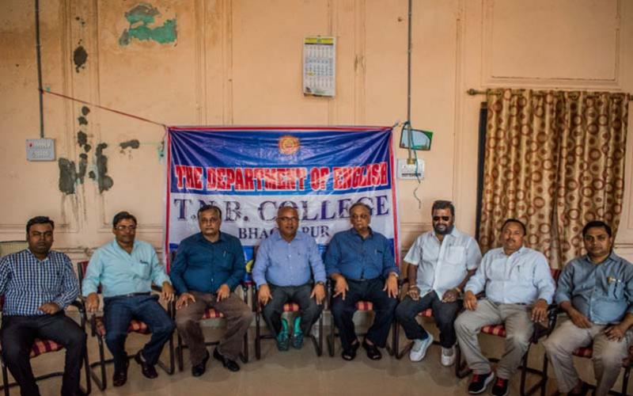

Department of English

Contact Info:-
Mob: 9939255528
Email- mksinha2807@gmail.com , ashishpriya005@gmail.com
Courses:-
Intermediate (I.A, I.Sc.)
B.A. (Hons), B.A. (Gen)
M.A
Department of English
Mission :-
The English Department is improved with the mission to not only hold regular interactive classes but to develop the literary sensibility linguistic in the students.
Vision:-
The English Department has the vision to develop the literary and cultural potential among students. With this view the Department has set up the language Lab to develop the linguistic abilities of the students coming from the rural and vernacular background.
Brief History :-
The Department of English is one of the founding Department of the T.N.B. College since its inception in 1883. The Department has had the good fortune of having some of the brightest minds as teachers. When the college was affiliated to Calcutta University, Honours teaching started in 1890 when there were few college in this part of state.
The department feels priveleged in having on its faculty outstanding teachers like Dr. N.K. Banarjee, Dr. M.Q. Towheed (Ex- Vice Chanceller, T.M. Bhagalpur University) and a host of eminent teachers.
The Department, from time to time has been organising seminar, debates and other literary activities. Recently, thanks to the inspiration given by our present Head Prof. Mithilesh kumar sinha, The English Association has been constituted for all round development of the student of the Department. The entire management of the Association has been entrusted to the student themselves in order to develop their organisational and leadership skill. As a part of its activities, the English Association has already organised an inter- college Debate competition and seminar on the topic "Women in Shakespeare's Plays" with a promising proof of students, we hope to continue the good work in future.
Faclties :-
|
|
|
|
Ashish Priya
|
Dr. M. A. Rizwee
|